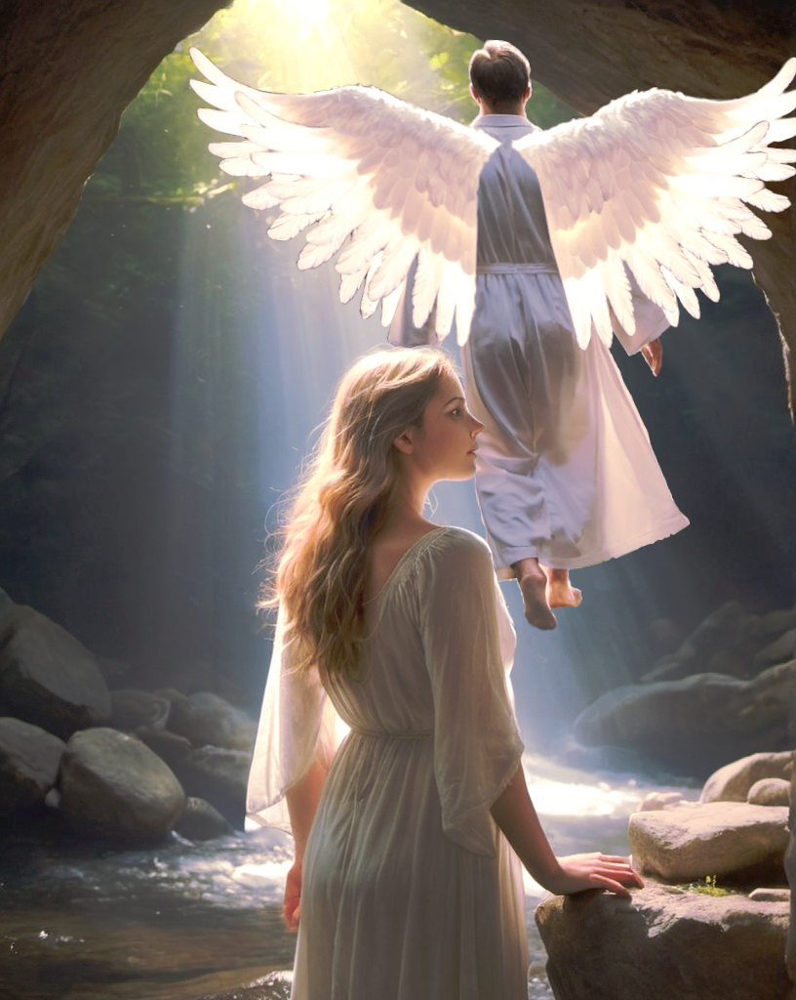

Im Buche Mose Kapitel 6, Vers 1 und 2 stoßen wir auf eine seltsame Erzählung: „Da sich aber die Menschen begannen zu mehren auf Erden und ihnen Töchter geboren wurden, da sahen die Kinder Gottes nach den Töchtern der Menschen, wie sie schön waren, und nahmen zu Weibern, welche sie wollten.” Wir überspringen vorerst Vers 3 und machen mit Vers 4 weiter, wo das Thema wieder aufgegriffen wird: „Es waren auch zu den Zeiten Tyrannen auf Erden; denn da die 'Kinder Gottes' zu den 'Töchtern der Menschen' eingingen und sie ihnen Kinder gebaren, wurden daraus Gewaltige in der Welt und berühmte Männer.” Möchte man diese Passagen wortwörtlich verstehen, dann sorgen sie bestimmt für große Verwirrung, denn wie kann es so etwas wie Beziehungen zwischen göttlichen Wesen und Menschen geben? Für weitere Verwirrung sorgt es, wenn wir den 3. Vers betrachten: „Da sprach der HErr: Die Menschen wollen sich von meinem Geist nicht mehr strafen lassen; denn sie sind Fleisch. Ich will ihnen noch Frist geben 120 Jahre.”
Seid aber unbesorgt, denn wir werden die Lage schrittweise aufklären! Wir fangen mit dem 3. Vers an: Gott ist mit dem Verhalten der Menschheit äußerst unzufrieden und entscheidet ihr 120 Jahre zu geben, um zu sehen, ob die Situation sich verbessern wird. Diese 120-jährige Frist kann man als Vorwarnung betrachten für das was kommmen wird: nämlich die Sinnflut. Schon in den Versen 5 bis 8 spricht Gott Klartext: „Da aber der HErr sah, dass der Menschen Bosheit groß war auf Erden und alles Dichten und Trachten ihres Herzens nur böse war immerdar, da reute es ihn, dass er die Menschen gemacht hatte auf Erden, und es bekümmerte ihn in seinem Herzen, und er sprach: Ich will die Menschen, die ich geschaffen habe, vertilgen von der Erde, vom Menschen an bis auf das Vieh und bis auf das Gewürm und bis auf die Vögel unter dem Himmel; denn es reut mich, dass ich sie gemacht habe. Aber Noah fand Gnade vor dem HErrn.”
Aber jetzt gibt es mehrere Fragen, z.B.: Was haben die Beziehungen zwischen den Söhnen Gottes und Menschentöchtern mit der Sinnflut zu tun? Da die biblische Texte jene Beziehungen zuerst in Verbindung mit dem Unmut Gottes bringen, musste dieser Aspekt wichtig sein. Aber warum werden hier allein die Menschen schuldig gemacht, für etwas, an dem die „Söhnne Gottes” auch eine Rolle spielten? Fragen über Fragen, bis einem klar wird, dass diese Beziehungen zwischen Menschen und Himmelswesen nicht wirklich stattfanden, sondern eine Sache der Mythologie sind. Menschen haben längst die mythologische Vorstellung geprägt, dass übermenschliche Wesen gelegentlich Nachwuchs mit normalen Menschen zeugten, woraus besondere Menschen aller Art geboren werden. Im Kontext dieser Geschichte, waren jene besonderen Menschen besonders gewalttätig bzw. sie waren Tyrannen, die sogar Berühmtheit erlangten. Das Gegenbeispiel dazu wäre Jesus Christus, der auch als Nachwuchs einer übernatürlichen Intervention zwischen dem Göttlichen und dem Menschlichen betrachtet werden könnte.
Fazit: Die Sinnflut selbst wird in einem späteren Beitrag behandelt werden, aber in diesem Beitrag konnten wir zumindest den richtigen Kontext festlegen. Bei der Analyse von Geschichten ist immer zu betrachten, dass sie überwiegend Situation aus unserer, also einer menschlichen Anschauungsweise, darstellen. In dieser Erzählung ist so eine Passage nicht überraschend: „da sahen die Kinder Gottes nach den Töchtern der Menschen, wie sie schön waren.” Die Ansichten und Denkweise der Söhnne Gottes werden doch schließlich von den Menschensöhnnen selbst geschildert. Das ist auch der Grund warum Gottes Unmut in dieser Erzählung allein die Menschen betraf. Der Sinn dieser Erzählung ist zweierlei: Der reine Spektakel, der aus der Idee von Beziehungen zwischen himmlichen Wesen und Menschen erzeugt wird, weckt das Interesse der Leser bzw, Zuhörer, gleichzeitig wird uns eine Welt dargestellt, in der das Böse wächst, die Gewalt eskalliert und die Situation außer Kontrolle geraten ist. Und nun ist es soweit: Die Welt muss schließlich rein gewaschen werden.